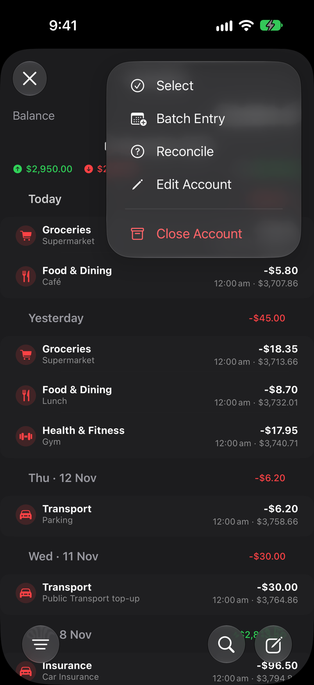
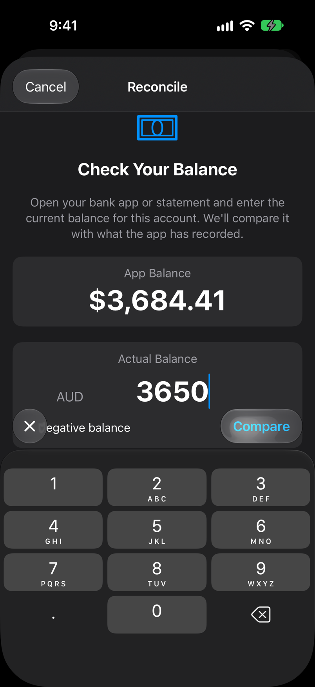
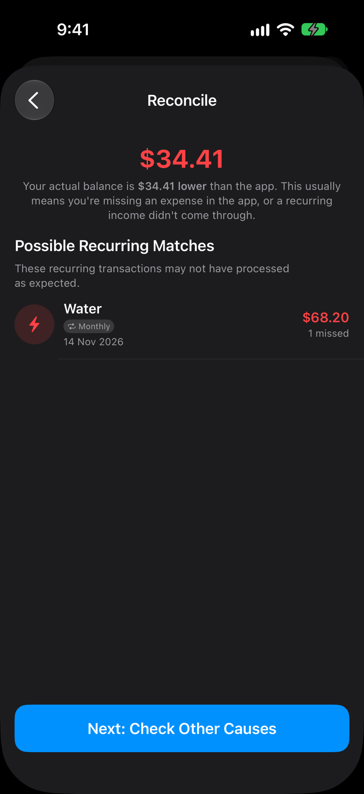
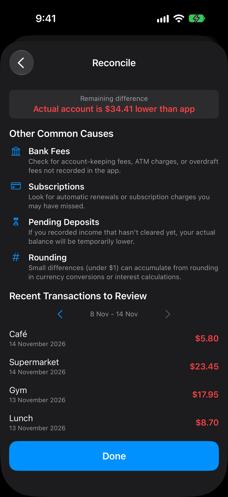
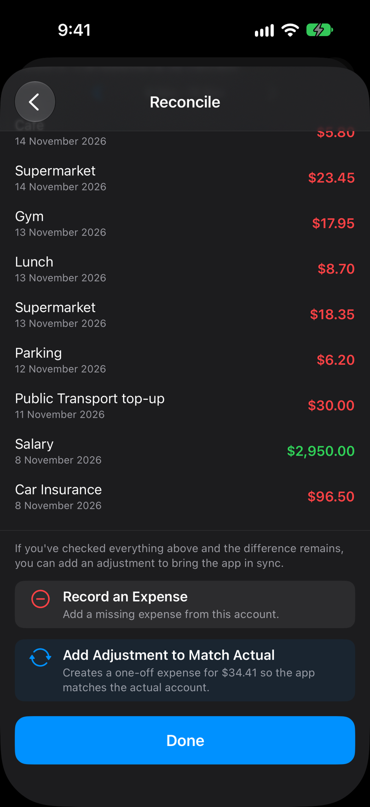
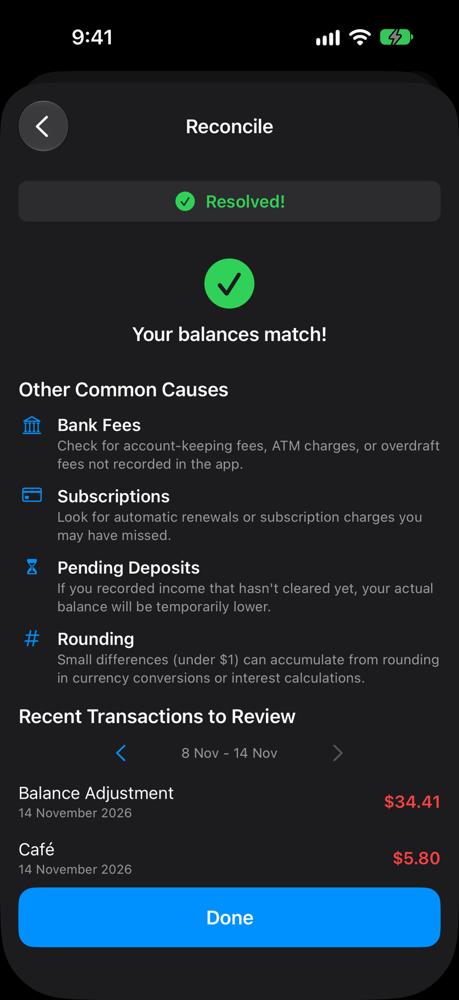

Guide
Reconcile an account with your bank
Every so often, check that the balance in BudgetDaily matches your bank. If it does not, Reconcile walks you through the likely reasons and lets you correct it.
Step by step
One screen at a time
-
1
Open the account menu
On Accounts, tap the account, then the button with three dots at the top right. Tap Reconcile.

-
2
Enter the balance your bank shows
Type the current balance from your bank app or statement, then tap Compare.

-
3
Read the difference
BudgetDaily tells you how far apart the two are and in which direction. It also lists recurring payments that may not have been recorded, which is the most common cause.
Tap Next: Check Other Causes.

-
4
Check the usual causes
Look through your recent transactions against your bank statement. Fees, forgotten subscriptions and income that has not cleared account for most differences.

-
5
Choose how to fix it
Scroll to the bottom. If you found the missing item, tap Record an Expense and enter it properly.
If you cannot find it, tap Add Adjustment to Match Actual to add a single correcting entry for the difference.

-
6
Pick a category for the adjustment
Choose where the correction should be counted. Use Other if you do not know what it was.
-
7
Balances match
Tap Done. The adjustment is an ordinary transaction, so you can edit or delete it later if you find the real cause.

What to do next
Related tips and guides
Reconcile regularly. A small difference found this week is much easier to trace than a large one found in three months.
Found a refund you forgot? Track a refund shows how to record it.
Entering a lot at once? Batch Entry, in the same menu, adds several transactions in one go.